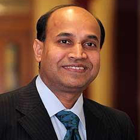
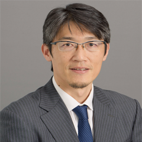

IoT Enabled Sensors for Health, Home and Environmental Monitoring
|
Abstract: The advancement of sensing technologies, embedded systems, wireless communication technologies, nano-materials, and miniaturization makes it possible to develop IoT enabled smart sensing systems. IoT enabled wearable and non-wearable sensors monitor physiological parameters as well as human activities continuously to detect anyabnormal and/or unforeseen situations which need immediate attention. Therefore, necessary help can be provided in times of dire need. IoT enabled sensors provides real time environmental data which will provide full awareness of weather/climate and can be used to take any strategic/corrective actions to address issues. This seminar will discuss fabrication and developmental works on IoT enabled sensors at Macquarie University based on MEMS as well as flexible materials for home, health and environmental monitoring.
|

Professor Dr. Subhas Mukhopadhyay
FIEEE (USA), FIEE (UK), FIETE (India)
Distinguished Lecturer – IEEE Sensors Council
School of Engineering, Macquarie University, NSW 2109
|
Brief Bio: Subhas Mukhopadhyay holds a B.E.E. (gold medallist), M.E.E., Ph.D. (India) and Doctor of Engineering (Japan). He has over 31 years of teaching, industrial and research experience.
Currently, he is working as a Professor of Mechanical/Electronics Engineering, Macquarie University, Australia and is the Discipline Leader of the Mechatronics Engineering Degree Programme. His fields of interest include Smart Sensors and sensing technology, instrumentation techniques, wireless sensors and network (WSN), Internet of Things (IoT),Mechatronics etc. He has supervised over 45 postgraduate students and over 150 Honours students. He has examined over 75 postgraduate theses.
He has published over 450 papers in different international journals and conference proceedings, written ten books and fifty two book chapters and edited eighteen conference proceedings. He has also edited thirty five books with Springer-Verlag andthirty two journal special issues. He has organized over 20 international conferences as either General Chairs/co-chairs or Technical Programme Chair. He has delivered 390 presentations including keynote, invited, tutorial and special lectures.
He is a Fellow of IEEE (USA), a Fellow of IET (UK), a Fellow of IETE (India). He is a Topical Editor of IEEE Sensors journal. He is also an associate editor of IEEE Transactions on Instrumentation and Measurements and IEEE Reviews in Biomedical Engineering (RBME). He is a Distinguished Lecturer of the IEEE Sensors Council from 2017 to 2022. He chairs the IEEE Sensors CouncilNSW chapter.
More details can be available at
https://scholar.google.com.au/citations?user=8p-BvWIAAAAJ&hl=en
https://orcid.org/0000-0002-8600-5907
http://web.science.mq.edu.au/directory/listing/person.htm?id=smukhopa
|
AI-based Smart Healthcare
|
Abstract: With the rapid aging society in developed countries particularly Japan, social costs for nursing care and medical expenses are also rising. Meanwhile, the size of the average family has continued to shrink, which results in the increase of elderly people living alone. Smart healthcare is expected to support the aging society where people can live healthily and peacefully while reducing the costs for support dramatically. To realize such a society, smart technologies are necessary. Now AI is becoming more and more important in smart healthcare as well. In this talk, we will introduce AI-based smart healthcare. We will also introduce some techniques to detect mental diseases.
|

Professor Tomoaki Ohtsuki (Otsuki)
Department of Information and Computer Science
Keio University
Hiyoshi
Kohoku-ku, Yokohama, Japan
|
Brief Bio: Tomoaki Ohtsuki (Otsuki) is currently a Professor at Keio University, Japan. He received the B.E., M.E., and Ph. D. degrees in Electrical Engineering from Keio University, Yokohama, Japan in 1990, 1992, and 1994, respectively. From 1995 to 2005 he was with the Science University of Tokyo. In 2005 he joined Keio University. He is engaged in research on wireless communications, optical communications, signal processing, and information theory. Dr. Ohtsuki is a recipient of the 1997 Inoue Research Award for Young Scientist, the 1997 Hiroshi Ando Memorial Young Engineering Award, Ericsson Young Scientist Award 2000, 2002 Funai Information and Science Award for Young Scientist, IEEE the 1st Asia-Pacific Young Researcher Award 2001, the 5th International Communication Foundation (ICF) Research Award, 2011 IEEE SPCE Outstanding Service Award, the 27th TELECOM System Technology Award, ETRI Journal’s 2012 Best Reviewer Award, 9th International
Conference on Communications and Networking in China 2014 (CHINACOM '14) Best Paper Award, and the 26th Asia-Pacific Conference on Communications (APCC2021) Best Paper Award.
He has published more than 220 journal papers and 430 international conference papers.
He served as Chair of IEEE Communications Society, Signal Processing for Communications and Electronics Technical Committee. He served as a technical editor of the IEEE Wireless Communications Magazine and an editor of Elsevier Physical Communications. He is now serving as an Area Editor of the IEEE Transactions on Vehicular Technology and an editor of the IEEE Communications Surveys and Tutorials. He has served general-co chair and symposium co-chair of many conferences, including IEEE GLOBECOM 2008, SPC, IEEE ICC2011, CTS, IEEE GCOM2012, SPC, IEEE ICC2020, SPC, IEEE SPAWC, and IEEE APWCS. He gave tutorials and keynote speeches at many international conferences including IEEE VTC, IEEE PIMRC, and so on. He was the President of the Communications Society of the IEICE, Japan. He is a fellow of the IEICE, a senior member of the IEEE, and a Distinguished Lecturer of the IEEE Vehicular Technology society.
|
Principal Host
 |
Sudip Misra, PhD (Carleton U, Canada), FNAE (India), FNASc (India), FIETE (India), FIET (UK), FRSPH (UK)
ACM Distinguished Scientist
Alexander von Humboldt Fellow (Germany)
IEEE Communications Society Distinguished Lecturer
Professor & INAE Abdul Kalam Technology Innovation National Fellow
Department of Computer Science & Engineering
Indian Institute of Technology
Kharagpur-721302
West Bengal, India
Official Website: https://cse.iitkgp.ac.in/~smisra/
SWAN Group: https://cse.iitkgp.ac.in/~smisra/swan/
|
Co-Hosts
 |
Dr. Arijit Roy
India-France Raman-Charpak Fellow,
Former Senior Research Fellow, Council of Scientific & Industrial Research
Post-Doctoral Research Fellow
Parallel Computing and Optimisation Group
University of Luxembourg, Luxembourg
Website: www.arijitroy.info
|
 |
Dr. Ayan Mondal
Assistant Professor
Department of Computer Science and Engineering
Indian Institute of Technology Indore
Khandwa Road, Simrol, Indore 453552, India
Website: https://ayanmondal.github.io/
|
Webinar Registration
All participants need to pre-register by November 1, 2021 by filling-up the following form: Registration Link
Zoom sign-in details will be shared with the registered participants using the email address provided in the registration form.
The Webinar flyer is available here.